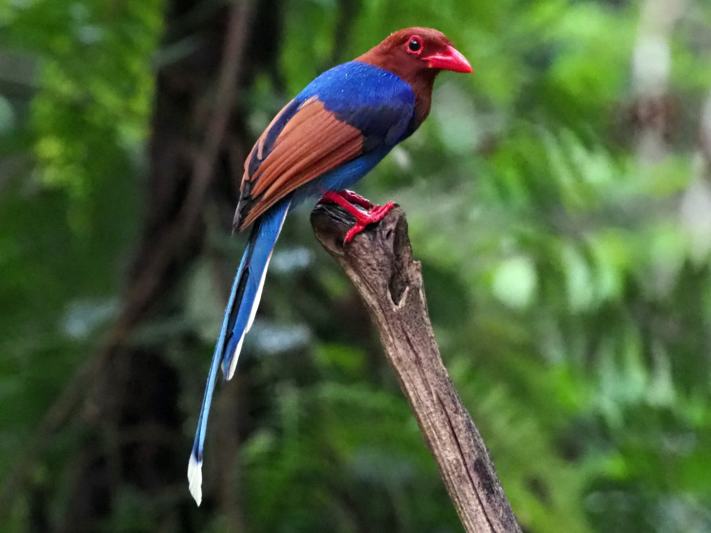

Animals in Sri Lanka
Sri Lanka, the island nation adorned with breathtaking landscapes and rich biodiversity, boasts a remarkable collection of endemic animals found nowhere else on Earth. These fascinating creatures, a testament to the unique evolutionary history of the island, deserve a spotlight in any exploration of Sri Lankan wildlife.
Endemic Wonders
Sri Lankan Leopard
The elusive apex predator, known for its striking rosette patterns and stealthy grace, roams the verdant jungles and dry forests. Witness its majesty at Yala National Park or Wilpattu National Park, renowned for leopard sightings.

Purple-faced Langur
These arboreal acrobats, with their captivating purple faces and soulful eyes, swing through the lush canopies. Keep an eye out for their playful antics in the misty highlands and dry zone forests.
Sri Lanka Blue Magpie
This vibrant avian gem, adorned with its signature blue plumage and long tail, adds a splash of color to the island's forests. Look for their mesmerizing calls and flashes of azure as they flit through the branches.
Sri Lankan Junglefowl
The ancestor of all domesticated chickens, this wild beauty struts through the undergrowth with its fiery plumage and distinctive crow. Their presence evokes a sense of the wild roots of our familiar farmyard fowl.

Serendib Scops Owl
This tiny nocturnal hunter, named after Sri Lanka's ancient name, camouflages itself amidst the foliage, with its large eyes peering out vigilantly. Listen for its haunting calls in the stillness of the night.
Sri Lankan Star Tortoise
These radiantly marked reptiles, with star-shaped patterns on their shells, are living fossils, remnants of a bygone era. Their slow, patient existence adds a sense of ancient wisdom to the island's landscapes.